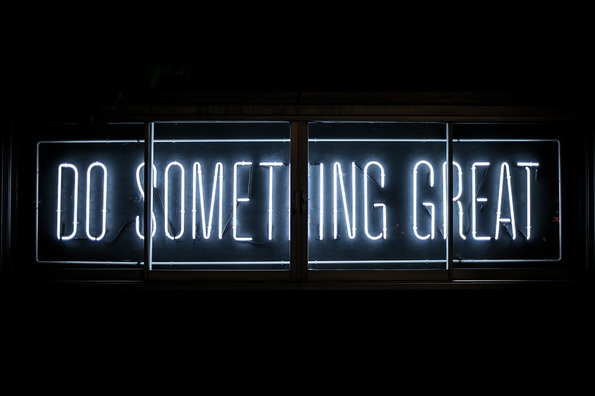

저는 아동문학과 미디어콘텐츠를 전공했습니다.
동화를 공부했고
동화를 썼고
동화 구연을 했고
동화 연극을 했습니다.(연기에 소질이 있어서 배우가 되는 것이 한 때 꿈이었습니다.)
그동안 많은 동화 콘텐츠들을 만들었습니다.
제가 만든 것들은 컴퓨터에만 차곡차곡 쌓일 뿐
세상 밖으로 흩뿌려져서 사람들에게 도움을 준 적은 없었습니다.
물론 피드백도 받아본 적이 없었구요.
주변 동기들은 '책'이라는 매체를 통해 자신들의 비전을 이루고 싶어했습니다.
그러나 저는 '책'을 통해 이야기를 전달하는 것이 지루했습니다.
글로 전달하는 건 잘 하지도 못할 뿐더러 즐거워하지도 않았기에...
그래서 생각했습니다.
내가 상상하고 꿈꾸는 것들을 표현하기에 저는 턱없이 부족했습니다.
웹이든 게임이든 어플이든 간에 무엇이든지 창작하고 싶었습니다.
그래서 코딩을 배웁니다. 그래서 개발자가 되려합니다.
저는 생각합니다.
누구나 창작자가 될 수 있고, 누구나 개발자가 될 수 있습니다.
저는 둘 다 잘하고 싶습니다
그냥 다짜고짜 스토리만 짜는 사람이 되고 싶지도
혹은 그냥 다짜고짜 개발만 하는 사람도 되고 싶지도 않습니다.
제 이야기를 가장 잘 표현할 수 있는 개발자가 되고 싶습니다.